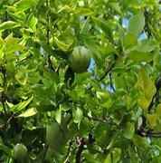

Overview
The Bael tree, known as Bilva in Sanskrit, is an ancient Ayurvedic tree with spiritual and medicinal importance. Extensively described in Indian literature since the Vedic period, it is one of the Dashamoola herbs (Group of ten roots).
Botanical Information
Botanical name: Aegle marmelos
Family: Rutaceae (Jambira kula)
Common Names and Synonyms
Hindi and English name: Bel, Bael
- Maaloora – Alleviates all types of Mala dosha
- Shandilya – Cures many diseases
- Shailusha – Grows in hilly regions
- Shriphala – Fruit of Bilva has an aroma
- Gandhapatra – Leaves of Bilva are aromatic
- Sadaaphala – Bilva bears fruits always
- Mahakapittha – Fruit resembles large Kapitta fruit
- Kantaki – Bilva is a thorny tree
- Granthila – Stem is nodular
- Atasara – Has carminative action
Classical Categorization
Charaka
- Shothahara – Group of herbs with anti-inflammatory property
- Arshoghna – Group of herbs useful in hemorrhoids
- Asthapanopaga – Group of herbs useful in Basti treatment
Charaka has mentioned it as a plant source for oil. (Reference) – Sthavara Sneha Yoni
Sushruta
- Varunadi, Ambashtadi, Brihat panchamoola, Dashamoola
Morphology / Habitat
Commonly found throughout India
- Root – Tap root branched
- Stem – Erect, branched, woody, cylindrical
- Leaf – Palmately compound, trifoliate, petiolate, alternate, net-veined, sessile
- Inflorescence – Cymose, axillary panicle
- Flowers – Pedicellate, bisexual, sweet-scented, 5 petals white in color
- Fruit – Berry
Part Used / Dose
- Mula (Root)
- Phala (Apakwa) – Unripe fruit
- Patra – Leaves
Dosage
- Churna (powder) – 1 – 2 g
- Patra swarasa (Leaf juice) – 10 – 20 ml
Phytoconstituents
- Marmelosin, Tannic acid, Fatty acids, Essential oils, Rutin, Aegeline, Marmesinin
Medicinal Properties
- Kapha anila hara – balances Vata and kapha
- Teekshna – piercing
- Snigdha – unctuous, oiliness
- Sangrahi – absorbent
- Deepana – improves digestion
- Katu, Tikta, Kashaya – has pungent, bitter, and astringent taste
- Ushna – hot
- Young unripe bael fruits
- Snigdha – unctuous, oily
- Ushna – hot
- Teekshna – piercing
- Pittavardhana – increases Pitta
- Deepana – improves digestion strength
- Kapha Vatajit – Balances Kapha and Vata
Bilva Fruit Oil Benefits
- To relieve chest congestion and cold, the Bael fruit oil is applied over the chest and forehead, over the sinus region.
- It also relieves pain and inflammation.
- It improves skin complexion.
- According to Bhojana Kutuhalam 14th chapter, the unripe bilva stimulates the digestive fire, is heavy for digestion, unctuous, and acts as absorbent. The ripe bilva fruit has madhura rasa as its secondary taste. It cures all the vitiation of three doshas. Bilva fruit dipped in kanjika helps in stimulating digestive fire, acts as a cardio tonic, improves taste perception, and helps in treating amavata.